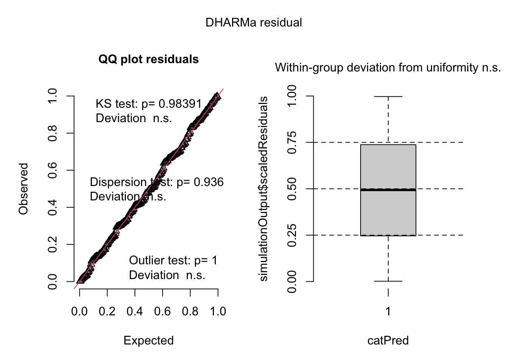
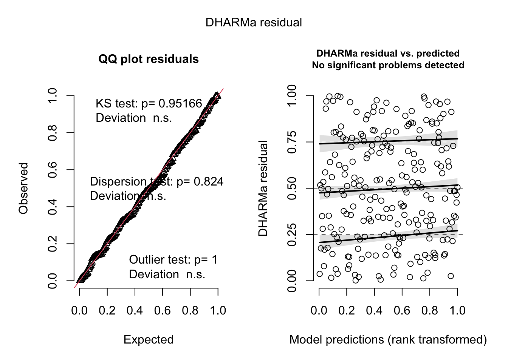

# reading in packages
library(tidyverse)
library(janitor)
library(here)
library(flextable)
library(readxl)
library(DHARMa)
library(MuMIn)
library(ggeffects)
# reading in data
sst <- read.csv(here("data", "SST_update2023.csv"))
nest_boxes <- read.csv(here("data", "occdist.csv"))ENVS 193DS Spring 2025 Final
Link to the GitHub repository is here
Set Up
Problem 1. Research Writing
a. Transparent statistical methods
In part 1, they used a Pearson’s r test. In part 2, they used an ANOVA.
b. More information needed
One additional piece of information that should be included in the results section is a post hoc test, like Tukey’s HSD. We know from the results of the ANOVA that at least two of the groups are different from each other, but not which ones. The Tukey’s HSD would provide information as to which groups are significantly different from each other. In this example, a Tukey’s HSD would be able to tell you which two sources between urban land, atmospheric deposition, fertilizer, wastewater treatment, and grassland were significantly different from each other in terms of average nitrogen load. Another additional piece of information that could be included in the results is the effect size, which quantifies how much the grouping variable affects the response variable. In this example, the effect size would tell whether the different sources had a negligible, small, medium, or large effect on the nitrogen load.
c. Suggestions for rewriting
Part 1:
There is a [weak, moderate, strong] [positive, negative] relationship between the distance from headwater (km) and the annual total nitrogen load (kg/year) (Pearson’s r = correlation coefficient, p = 0.03, \(\alpha\) = significance level).
Part 2:
We found a [small, medium, large] difference (\(\eta^2\) = effect size) between sources in average nitrogen load (one way ANOVA, F(num df, denom df) = F-statistic, p = 0.02, \(\alpha\) = significant level). On average (one of the significantly different sources) tended to have a [higher or lower] average nitrogen load than (other significantly different source) (ex results from Tukey’s HSD (difference) kg/year, 95% CI: [value, value] kg/year).
Problem 2. Data visualization
a. Cleaning and summarizing
sst_clean <- sst |> # starting with sst data frame
mutate(
month = month(date, label = TRUE, abbr = TRUE) |> # adding a column for months
factor(levels = month.abb, ordered = TRUE), # creating the months as an ordinal factor with name abbreviations
year = year(date)) |> # creating a column for years
group_by(month, year) |> # grouping the data by month and year
summarize(mean_monthly_sst = mean(temp, na.rm = TRUE)) |> # creating the mean monthly sst column
ungroup() |>
filter(year %in% c("2018", "2019", "2020", "2021", "2022", "2023")) |> # filtering to include 2018-2023
mutate( year = as_factor(year), # making the years a factor
year = fct_relevel(year,"2018", "2019", "2020", "2021", "2022", "2023")) |>
select( year, month, mean_monthly_sst) # selecting the columns of interest
slice_sample(sst_clean, n=5) # A tibble: 5 × 3
year month mean_monthly_sst
<fct> <ord> <dbl>
1 2023 Mar 12.8
2 2019 Sep 18.8
3 2021 Jun 15.9
4 2022 Jan 13.9
5 2022 Oct 17.9str(sst_clean)tibble [72 × 3] (S3: tbl_df/tbl/data.frame)
$ year : Factor w/ 6 levels "2018","2019",..: 1 2 3 4 5 6 1 2 3 4 ...
$ month : Ord.factor w/ 12 levels "Jan"<"Feb"<"Mar"<..: 1 1 1 1 1 1 2 2 2 2 ...
$ mean_monthly_sst: num [1:72] 15 14.7 14.6 13.9 13.9 ...b. Visualize the data
ggplot(data = sst_clean, # starting with sst_clean data frame
aes(x= month, # x axis is month
y = mean_monthly_sst, # y axis is mean monthly sst
color = year, # color and group data by year
group = year)) +
geom_point() + # adding points
geom_line() + # addding lines
scale_color_manual(values = c("2023" = "steelblue4", # creating color gradient
"2022" = "steelblue",
"2021" = "steelblue3",
"2020" = "steelblue2",
"2019" = "steelblue1",
"2018" = "lightskyblue")) +
labs(x = "Month", # renaming x axis
y = "Mean monthly sea surface temperature (°C)", # renaming y axis
color = "Year") + # renaming legend
theme(panel.background = element_blank(), # making background blank
panel.border = element_rect(color = "gray", fill = NA, linewidth = 1), # adding border
axis.line = element_blank(), # getting rid of gridlines
legend.position = c(0.05, 0.95), # moving legend to the top left inside the panel
legend.justification = c(0, 1))Problem 3. Data analysis
a. Response variable
In this data set, 0s and 1s represent absence and presence, respectively, of the different bird species in the nest boxes. For example, if a Tree Martin was present, there would be a 1 in that column, and if there were none present, there would be a 0 in that column.
b. Purpose of study
In the context of this study, Swift Parrots are the target species, as they are on the brink of extinction, and the nest boxes are going to be used in theory to help their population recover. The other two species, the Common Starling and the Tree Martin, are potential competitors that may interfere with the nest boxes.
c. Difference in “seasons”
The two different “seasons” that were compared in this study were the years 2016 and 2019. 2016 was the year that the nest boxes were initially deployed, and 2019 was 3 years after. In 2019, a tree flowering event triggered a second Swift Parrot breeding event at the study site.
d. Table of models
| Model Number | Season | Edge Distance | Predictor List |
|---|---|---|---|
| 0 | no predictors (null model) | ||
| 1 | X | X | all predictors (full model) |
| 2 | X | Season | |
| 3 | X | Edge Distance |
e. Run the models
#model 0: null model
model0 <- glm(sp ~ 1, # formula
data = nest_boxes_clean, # data set
family = "binomial") # binomial data
# model 1: all predictors
model1 <- glm(sp ~ edge_distance + season, # formula
data = nest_boxes_clean, # data set
family = "binomial") # binomial data
# model 2: season
model2 <- glm(sp ~ season, # formula
data = nest_boxes_clean, # data set
family = "binomial") # binomial data
# model 3: edge distance
model3 <- glm(sp ~ edge_distance, # formula
data = nest_boxes_clean, # data set
family = "binomial") # binomial dataf. Check the diagnostics
# diagnostics for model 0
plot(
simulateResiduals(model0))
# diagnostics for model 1
plot(
simulateResiduals(model1))
# diagnostics for model 2
plot(
simulateResiduals(model2))
#diagnostics for model 3
plot(
simulateResiduals(model3))Warning in newton(lsp = lsp, X = G$X, y = G$y, Eb = G$Eb, UrS = G$UrS, L = G$L,
: Fitting terminated with step failure - check results carefully
g. Select the best model
AICc(model0,
model1, # best model: all predictors
model2,
model3) |>
arrange(AICc) # arranging output df AICc
model1 3 226.3133
model3 2 229.6716
model2 2 236.3744
model0 1 238.8318The best model as determined by Akaike’s Information Criterion (AIC) is the model that includes both of the predictor variables, season and distance from the forest edge, to predict whether or not a Swift Parrot was present in the nest box.
h. Visualize the model predictions
model1_predictions <- ggpredict(model1, # creating object for model 1 predictions
terms = c("edge_distance", "season")) # predictor variables
ggplot(data = nest_boxes_clean, # start with next boxes clean data frame
aes(x = edge_distance, # x axis is edge distance
y = sp)) + # y axis is swift parrot presence/absence
geom_point(aes(color = season), # adding points
size = 3,
alpha = 0.4) +
geom_ribbon(data = model1_predictions, # adding ribbon
aes(x = x,
y = predicted,
ymin = conf.low,
ymax = conf.high,
fill = group),
alpha = 0.4) +
geom_line(data = model1_predictions, # adding line
aes(x = x,
y = predicted,
color = group)) +
scale_y_continuous(limits = c(0,1), # setting limits and only having 2 tick marks
breaks = c(0, 1)) +
scale_color_manual(values = c("2016" = "mediumpurple", "2019" = "royalblue")) +
scale_fill_manual(values = c("2016" = "mediumpurple1", "2019" = "royalblue1")) +
labs(x = "Distance from the forest edge (m)", # renaming title, axis, legend
y = "Probability of box occupancy",
title = "Swift Parrot",
color = "season",
fill = "season") +
theme(panel.background = element_blank(), # getting rid of background
axis.line = element_blank(), # getting rid of grid lines and ticks
axis.ticks = element_blank())
i. Write a caption for your figure
Figure 1. Probability of Swift Parrot nest box occupancy is higher in 2016 than 2019 and at closer distances to the forest edge. Data from Stojanovic, Dejan et al. (2021). Do nest boxes breed the target species or its competitors? A case study of a critically endangered bird [Dataset]. Dryad. https://doi.org/10.5061/dryad.83bk3j9sb. Points represent individual observations of the presence or absence of a swift parrot in a nesting box. Lines represent the model predictions for Swift Parrot occupation. Ribbons represent the 95% confidence interval. Colors represent the season (Purple = 2016, Blue = 2019).
j. Calculate model predictions
# probability of occupancy at 0m in 2016
ggpredict(model1,
terms = c("edge_distance [0]", "season [2016]"))# Predicted probabilities of sp
edge_distance | Predicted | 95% CI
--------------------------------------
0 | 0.48 | 0.33, 0.64# probability of occupancy at 900m in 2016
ggpredict(model1,
terms = c("edge_distance [900]", "season [2016]"))# Predicted probabilities of sp
edge_distance | Predicted | 95% CI
--------------------------------------
900 | 0.12 | 0.06, 0.24# probability of occupancy at 0m in 2019
ggpredict(model1,
terms = c("edge_distance [0]", "season [2019]"))# Predicted probabilities of sp
edge_distance | Predicted | 95% CI
--------------------------------------
0 | 0.30 | 0.18, 0.44# probability of occupancy at 900m in 2019
ggpredict(model1,
terms = c("edge_distance [900]", "season [2019]"))# Predicted probabilities of sp
edge_distance | Predicted | 95% CI
--------------------------------------
900 | 0.06 | 0.03, 0.13k. Interpret your results
Swift parrots tend to occupy nest boxes shortly after their deployment in their nesting sites, and at closer distances to the forest edge (Figure 1).
In the 2016 season, the probability of a swift parrot occupying a nest box 0m from the forest edge is 0.48 (95% CI :[0.33, 0.64]]) and 900m from the forest edge is 0.12 (95% CI: [0.06, 0.24]). In the 2019 season, the probability of a swift parrot occupying a nest box 0m from the forest edge is 0.30 (95% CI: [0.18, 0.44]) and 900m from the forest edge is 0.06 (95% CI: [0.03, 0.13]).
The occupancy trends of the Swift Parrot can be partly explained by the behavior of its common competitors. One of the Swift Parrot’s competitors, the Tree Martin, tends to occupy the nest boxes at further distances away from the forest edge. In addition, their other competitor, the Common Starling, tend to occupy the older nest boxes. Because of this, Swift Parrots tend to occupy the newer nesting boxes that are closer to the edge of the forest.
Problem 4. Affective and explanatory visualizations
a. Comparing visualizations
In Homework 2, I represented my data as a bar graph and a line graph, because I did not have many observations to go off of at that point. By the time I made my affective visualization in Homework 3, I had finished all of my data collection. My affective visualization is a paiting that looks like a swimming pool, but my underlying data is represented in a jitterplot.
Some of the similarities that I see between my exploratory visualizations and my affective visualization is that they show the comparison between categories. Both the bar graph and the jitterplot in my affective visualization were used to compare the mean amount of sleep in hours between the different categories of swimming workouts that I completed.
Even though I did not have many observations in my initial exploratory visualization, I could see from the bar graph that the Aerobic workout lead to the highest average hours slept, and from my line graph, an increased distance in yards also lead to the highest amount of hours slept. I noticed similar patterns in my final affective visualization, where the Aerobic and Racing categories of swimming workouts had the highest means, both with an average of 7.8 hours. All of my data matched my predictions, that longer, more intense workouts lead me to sleep a greater amount of hours at night.
One piece of feedback that I got during week 9 workshop was to include the individual data observations in my visualization. Before, I had just had a swimmer that I used to represent the mean in each category, by showing them at different places within a lane that represented a different category. I decided to add little bubbles to each of the lanes, which represent the individual data points, and I think adding this component really helped to make the visualization more clear.